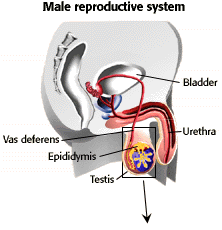
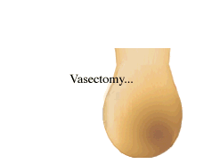

Human Reproduction Problem Set
Problem 11: Passage of sperm out of the epididymis
Tutorial to help answer the question
| The tube through which sperm passes from the epididymis to the penis is known as the __________. |
Tutorial
Vas deferens
|  |
The vas deferens is the tube that connects the epididymis, where the sperm are stored, to the urethra,
the duct that can carry either urine or semen. The urethra comes from the bladder, meets the vas deferens at the base of the penis, runs through the penis, and opens to the outside at the end of the penis. |
Male sterilization
|  |
Male sterilization or vasectomy is a simple procedure in which a piece of each vas deferens is cut out just above the epididymis and the cut ends are tied. This procedure is normally done under local anesthetic in the doctor's office.
Because the sperm stored in the epididymis can no longer flow through the vas deferens, the man's ejaculate does not contain sperm. |


University of Arizona
Updated: July 15, 1999
Contact the Development Team
http://biology.arizona.edu
All contents copyright © 1996-99. All rights reserved.